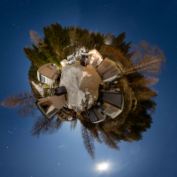
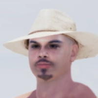

I wanted to test out 360° videos as quickly as possible to learn its limitations before I get started on a larger project. This is why I decided to make it low resolution without sound. The scene was rendered using unreal engine 4.27 and the sequence was exported as a video using the free version of Davinci Resolve. After exporting the video, I injected the VR metadata and uploaded it to YouTube. It can be watched using a VR headset, but I feel like the video is best suited for watching on a phone due to the quality. I also recommend a phone, because a computer/laptop would lose the ability to move around by physically turning around with your phone. (although you can still click and drag the screen to look around)
I hope to use this type of video for storytelling or music videos (most likely both together). Since they are 360°, it would be impossible to see the whole video by just watching it once. This might encourage the viewers to watch them again just in case they missed something. Since Youtube’s algorithm favors re-watchability, I think this could help the videos gain some additional views. I also like the idea of using this to showcase products like digital art or for fashion to demonstrate ideas using 3d models instead of using a 2d sketch.

During winter break I learned photogrammetry and have been wanting to use it for videos. As of right now, I have only scanned small objects like hats, shoes, and an Mr2 for use in animations. I plan to scan locations to bring into unreal engine 5 for hyper realistic scenes. These scans could also work well with 360 videos to make virtual museums. I was also thinking I could make a tutorial to share some of my tips and tricks on photogrammetry.